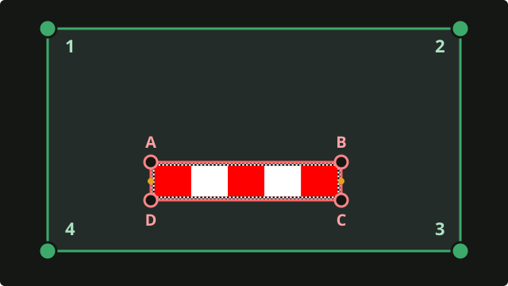
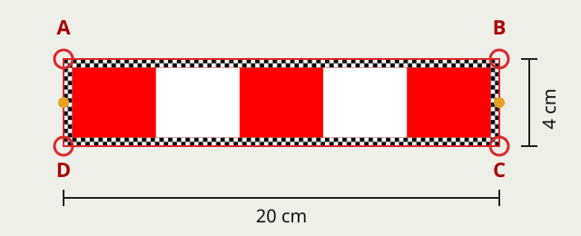
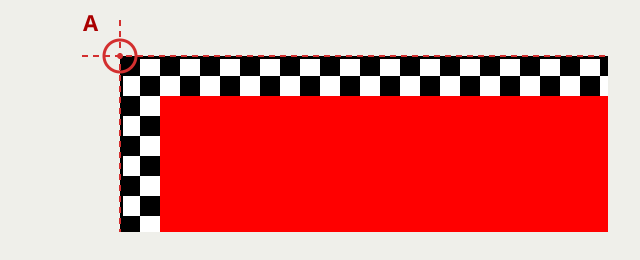
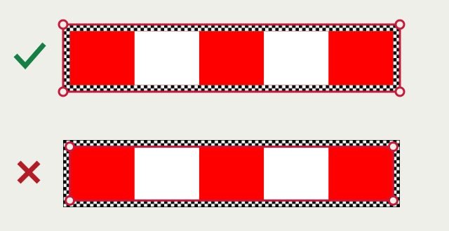

User guide · Wall measurements · v0.0.1
Your first measurement,
step by step.
Start with a rectangular, upright surface: a door, a panel or part of a wall. A reference stick in the same plane gives the photo its real-world scale.
Need the app? Download the Android APK. This guide describes the published v0.0.1 wall workflow.
01 · Before the photo
Prepare the reference stick
You need the app, a ruler or tape measure, and a flat reference with red at both ends and a checker border on all four sides. The whole stick and the object’s four corners must fit in one photo.
- Print the reference stick at 100% / Actual size. Turn off “Fit to page”.
- Check the printed 10 cm ruler against a real ruler. The complete reference, including the checker border, should be 20 cm long and 4 cm wide.
- Cut along the outer border and mount it on a flat, rigid backing. Keep the checker margin and measure the full outside dimensions after mounting.
- Place it flat against the same surface as the object. A stick held in front of a wall does not set the wall’s scale correctly.
Using your own stick? Enter its measured full length and short width. Include its checker border, but not any blank paper outside it. Do not enter the length of one coloured band.
02 · In the app
Set both dimensions
Open Settings from the camera screen. Choose your display units, then enter Reference stick length and Reference stick width.
- Printed stick, centimetres
- Length 20 · Width 4
- The same stick, metres
- Length 0.20 · Width 0.04
Use the values you actually measured. Both must be positive numbers. Settings are saved between sessions; return with the back arrow.
The “Feet & inches” setting displays results in feet and inches, but its input fields use decimal feet: 1.5 means 1 foot 6 inches. For the printed stick, entering 20 and 4 in centimetres avoids conversion rounding.
03 · Frame the surface
Take a clear photo
- Allow camera access when Android asks. Take the photo inside Metrologist so it has the camera and tilt information for the shot.
- Keep the whole object and reference visible, with space around their edges. Use even light; avoid blur, glare and shadows over the bands.
- For v0.0.1, use a moderate oblique view rather than a perfectly straight-on or nearly edge-on view. Keep all corners easy to distinguish.
- Hold the phone still and tap Capture.
The object and reference must lie on one flat plane. A door frame, raised trim or curved surface is not the same plane as the flat panel behind it.
04 · Mark the photo
Two boxes. Four corners each.

First, put the green box around the object you want to measure. Put its four dots on the object's four corners. Then adjust the red box around the stick, as shown below.
Put the red box around the whole stick
Think of the red box as a fence. Keep every checker square inside it. The four red dots go on the four outside corners, labelled A, B, C and D below. The two yellow dots halfway along the ends are not corners.

- Zoom in with two fingers until the stick is easy to see.
- Drag dot A to the top-left outside corner. Then place B, C and D on the other three outside corners. The letters are only in this guide; they are not printed on the stick.
- The centre of each dot must sit where the two outside edges of the thin black line meet. Use the little magnifier to see the corner.
- Look along all four sides. The red lines should follow the outside edges, with all the checkers inside. Then tap Measure.


The current automatic detector expects the older band pattern. For this checker design, align all four red handles manually before measuring. The initial green box is a placeholder, not a detected object.
05 · Check the reading
Understand the result
- Width and height
- The averages of the two opposite edge lengths. On a rectangle, these are its usual width and height.
- Area
- The area inside the four marked object corners. The reference stick is not added to it.
- Diagonal
- The average of the two corner-to-corner diagonal lengths.
- Corner angles
- 90° describes a square corner. Start with rectangular objects; one photo cannot resolve every four-sided shape reliably.
- Confidence and notes
- Read the confidence label, percentage and caveats together. A high confidence score is a quality indicator, not a guaranteed error percentage.
Low confidence, a fallback-method note or inconsistent readings are reasons to check the marks and take another photo. Check important dimensions with a ruler or tape.
06 · Next action
Correct or keep the measurement
- Re-mark: return to the same photo, adjust the boxes, then measure again.
- Export: open Android’s share sheet with an annotated PNG containing the photo and measurement summary. Choose a sharing or saving app available on your phone.
- New: return to the camera for another measurement.
- On the marking screen, Retake takes a new photo; Reset restores the starting boxes and zoom, discarding your adjustments.
If the app cannot produce a usable result, correct the photo, reference dimensions or marks before exporting. Do not treat a failed or zero-sized reading as a measurement.
07 · A useful first test
Measure something you can check
Use a flat rectangular panel or board placed upright. Measure its width and height with a ruler, then repeat with the app and the reference on its face.
- Compare the app’s width and height with the ruler values in the same units.
- Re-mark carefully, then take a second photo from a slightly different angle.
- If readings disagree, recheck the reference dimensions, its position and all eight handles.
Error (%) = |app value − ruler value| ÷ ruler value × 100. For example, 50.5 cm against a known 50 cm is a 1% error. This example is not an accuracy guarantee.
08 · Troubleshooting
When a measurement looks wrong
The reference was not detected
Place the red box manually around all four outside corners. Improve lighting and keep every band visible for the next photo.
The result is much too large or small
Check the selected units, full reference length and short width. Make sure you did not enter one band’s length. Keep the reference on the same plane as the object.
A straight-on photo fails
The published v0.0.1 can reject straight-on rectangle views. Retake from a moderate angle while keeping all corners clear. Do not compensate by moving the marks away from the real edges.
The corners overlap or the shape cannot be measured
Spread the handles onto four distinct outer corners. Avoid crossed edges and corners on one straight line. Zoom in to check both boxes, or retake a less oblique photo.
Can I measure a floor or table?
v0.0.1’s marking screen uses wall mode. Do not use that mode for a floor or tabletop. If a newer build offers Wall and Floor / table, select the option that matches the physical surface.
Export is disabled, or Capture will not retry
Export needs a usable result. Re-mark or retake first. If capture remains stuck in v0.0.1, return to the camera or reopen the app, check camera permission and try again.
Still stuck?
Open a GitHub issue with your app version, phone model, Android version, reference dimensions and the steps that failed. Include a photo only if you are comfortable sharing it publicly.